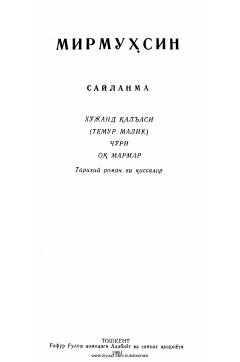

XQTemur Malik jasorati va Xo'jand qal'asi mudofaasiga bag'ishlangan tarixiy roman.
Ushbu kitob taniqli yozuvchi Mirmuxsinning tanlangan asarlaridan biri bo'lib, Xo'jand qal'asi mudofaasi va Temur Malik hayotiga bag'ishlangan tarixiy romandir. Asarda xalqimizning qahramonligi, ozodlik yo'lidagi kurashlari va tarixiy siymolarning jasorati ta'sirchan hikoya qilinadi.